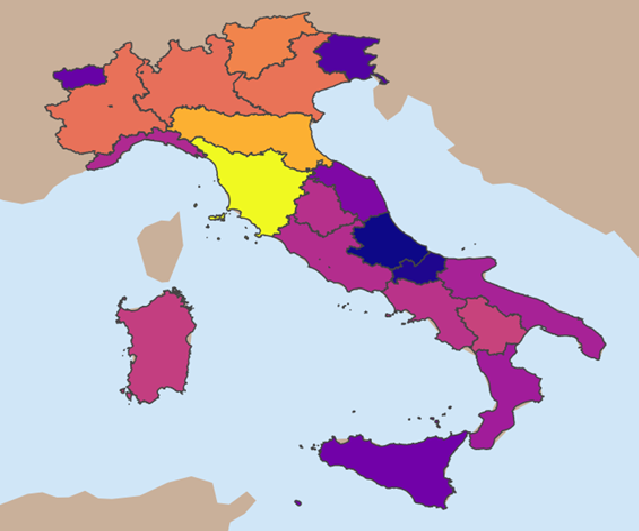

<!DOCTYPE html>
<html lang="en">
<head>
    <meta charset="UTF-8">
    <meta name="viewport" content="width=device-width, initial-scale=1.0">
    <title>Multimodal - National Water Intelligence</title>
    
    <!-- Tailwind CSS for Styling -->
    <script src="https://cdn.tailwindcss.com"></script>
    
    <!-- React 18 & ReactDOM 18 -->
    <script src="https://unpkg.com/react@18/umd/react.production.min.js"></script>
    <script src="https://unpkg.com/react-dom@18/umd/react-dom.production.min.js"></script>
    
    <!-- Prop-Types (Mandatory for Recharts UMD) -->
    <script src="https://unpkg.com/prop-types@15.8.1/prop-types.min.js"></script>
    
    <!-- Recharts (Stable UMD Version) -->
    <script src="https://unpkg.com/recharts@2.12.7/umd/Recharts.js"></script>
    
    <!-- Babel for Browser-side JSX -->
    <script src="https://unpkg.com/@babel/standalone/babel.min.js"></script>

    <style>
        @import url('https://fonts.googleapis.com/css2?family=Inter:wght@300;400;500;600;700;800&display=swap');
        body { font-family: 'Inter', sans-serif; }
        .recharts-cartesian-grid-horizontal line, .recharts-cartesian-grid-vertical line {
            stroke: #f1f5f9;
        }
        .region-path {
            transition: all 0.3s cubic-bezier(0.4, 0, 0.2, 1);
            cursor: pointer;
        }
    </style>
</head>
<body class="bg-slate-50 text-slate-900">
    <div id="root"></div>

    <script type="text/babel">
        const { useState, useEffect } = React;

        // Data aggregated from the provided CSV (National Italy "IT" entries)
        const NATIONAL_WASTE_DATA = [
            { year: '2005', loss: 32.6 },
            { year: '2008', loss: 32.1 },
            { year: '2012', loss: 37.4 },
            { year: '2015', loss: 41.4 },
            { year: '2018', loss: 42.1 },
            { year: '2020', loss: 42.2 },
            { year: '2022', loss: 42.4 },
        ];

        // Updated with correct 2022 data from WATER_WASTE.csv
        const MACRO_REGIONAL_LOSS_2022 = [
            { id: 'north', name: 'North', value: 35.0 },
            { id: 'center', name: 'Center', value: 43.9 },
            { id: 'south', name: 'South', value: 50.5 },
            { id: 'islands', name: 'Islands', value: 51.9 },
        ];

        // Data for the top 5 provinces with the highest water loss in 2022
        const TOP_5_PROVINCE_LOSS_2022 = [
            { name: "L'Aquila", value: 75.2 },
            { name: "Latina", value: 74.1 },
            { name: "Belluno", value: 70.4 },
            { name: "Potenza", value: 67.0 },
            { name: "Frosinone", value: 65.5 },
        ];
        // Raw CSV data for region counts, embedded as a string
        const regionCountsCsvData = `Region_Name,Source_Count
Toscana,5218
Emilia-Romagna,1633
Trentino-Alto Adige/Südtirol,741
Veneto,533
Piemonte,508
Lombardia,482
Basilicata,186
Sardegna,167
Campania,131
Umbria,122
Lazio,115
Liguria,104
Puglia,88
Calabria,78
Marche,42
Sicilia,33
Valle d'Aosta/Vallée d'Aoste,28
Friuli-Venezia Giulia,20
Molise,10
Abruzzo,8`;

        const App = () => {
            const [activeTab, setActiveTab] = useState('overview');
            const [hoveredRegion, setHoveredRegion] = useState(null);
            const tabs = ['overview', 'data-exploration', 'Strategic-Selection', 'Frontier State'];

            // Refs to manage scroll state without triggering re-renders
            const scrollCountRef = React.useRef(0);
            const lastScrollDirectionRef = React.useRef(null); // 'up', 'down', or null
            const isThrottledRef = React.useRef(false);
            const throttleDuration = 1000; // 1 second cooldown between tab switches after a successful switch

            useEffect(() => {
                window.scrollTo({ top: 0, behavior: 'smooth' });
            }, [activeTab]);

            useEffect(() => {
                const handleWheelScroll = (event) => {
                    const isAtBottom = window.innerHeight + window.scrollY >= document.documentElement.scrollHeight - 5; // 5px buffer
                    const isAtTop = window.scrollY === 0;
                    const scrollDown = event.deltaY > 0;
                    const scrollUp = event.deltaY < 0;

                    const currentScrollDirection = scrollDown ? 'down' : (scrollUp ? 'up' : null);

                    // Reset count if direction changes or not at an edge
                    if (currentScrollDirection !== lastScrollDirectionRef.current || (!isAtBottom && !isAtTop)) {
                        scrollCountRef.current = 0;
                        lastScrollDirectionRef.current = currentScrollDirection;
                    }

                    // Only proceed if at an edge and scrolling in the relevant direction
                    if ((scrollDown && isAtBottom) || (scrollUp && isAtTop)) {
                        event.preventDefault();
                        
                        if (isThrottledRef.current) {
                            return; // Still in cooldown period after a recent tab switch
                        }

                        scrollCountRef.current += 1;

                        if (scrollCountRef.current >= 3) { // Require 3 consecutive scrolls
                            const currentIndex = tabs.indexOf(activeTab);
                            let newIndex = -1;

                            if (scrollDown && isAtBottom && currentIndex < tabs.length - 1) {
                                newIndex = currentIndex + 1;
                            } else if (scrollUp && isAtTop && currentIndex > 0) {
                                newIndex = currentIndex - 1;
                            }

                            if (newIndex !== -1) {
                                setActiveTab(tabs[newIndex]);
                                isThrottledRef.current = true;
                                scrollCountRef.current = 0; // Reset count after successful tab change
                                setTimeout(() => {
                                    isThrottledRef.current = false;
                                }, throttleDuration);
                            }
                        }
                    } else {
                        // If not at an edge or not scrolling in the relevant direction, reset count
                        scrollCountRef.current = 0;
                        lastScrollDirectionRef.current = null;
                    }
                };

                window.addEventListener('wheel', handleWheelScroll, { passive: false });

                return () => {
                    window.removeEventListener('wheel', handleWheelScroll);
                };
            }, [activeTab, tabs]); // Re-bind the effect when the active tab or tabs array changes

            const [isLibLoaded, setIsLibLoaded] = useState(false);
            const [regionSourceCounts, setRegionSourceCounts] = useState([]);

            useEffect(() => {
                const timer = setTimeout(() => {
                    if (window.Recharts) setIsLibLoaded(true);
                }, 100);
                return () => clearTimeout(timer);
            }, []); // Only runs once on mount
            useEffect(() => {
                // Parse the CSV data once when the component mounts
                const lines = regionCountsCsvData.trim().split('\n');
                const headers = lines[0].split(',');
                const data = lines.slice(1).map(line => {
                    const values = line.split(',');
                    return {
                        name: values[0],
                        count: parseInt(values[1], 10)
                    };
                });
                // Sort and set the state
                setRegionSourceCounts(data.sort((a, b) => b.count - a.count));
            }, []); // Empty dependency array means this runs only once

            if (!isLibLoaded) {
                return (
                    <div className="flex items-center justify-center min-h-screen bg-slate-50">
                        <div className="text-center">
                            <div className="animate-spin rounded-full h-12 w-12 border-b-2 border-blue-600 mx-auto mb-4"></div>
                            <p className="text-slate-500 font-medium tracking-tight">Initializing Analytics Engine...</p>
                        </div>
                    </div>
                );
            }

            const subtitles = {
                'overview': "2022 Macro-Regional Infrastructure Analytics",
                'data-exploration': "A high-level view of data sources and semantic themes",
                'Strategic-Selection': "Identifying Prime Regions for Multimodal Deployment",
                'Frontier State': "Positioning Our Work in the Current Research Landscape"
            };

            const {
                AreaChart, Area, XAxis, YAxis, CartesianGrid, 
                Tooltip, ResponsiveContainer 
            } = window.Recharts;

            const currentRegion = hoveredRegion ? PROVINCIAL_LOSS_2022.find(r => r.id === hoveredRegion) : null;

            return (
                <div className="flex min-h-screen">
                    {/* Sidebar */}
                    <aside className="hidden md:flex flex-col w-64 bg-slate-900 text-white p-6 fixed h-full">
                        <div className="flex items-center gap-3 mb-10">
                            <div className="p-2 bg-blue-600 rounded-lg">
                                <svg xmlns="http://www.w3.org/2000/svg" width="24" height="24" viewBox="0 0 24 24" fill="none" stroke="currentColor" strokeWidth="2" strokeLinecap="round" strokeLinejoin="round"><path d="M12 22a7 7 0 0 0 7-7c0-2-1-3.9-3-5.5s-3.5-4-4-6.5c-.5 2.5-2 4.9-4 6.5C6 11.1 5 13 5 15a7 7 0 0 0 7 7z"/></svg>
                            </div>
                            <h1 className="text-xl font-bold">Multimodal - National Water Intelligence</h1>
                        </div>
                        
                        <nav className="space-y-2">
                            {tabs.map((tab) => (
                                <button
                                    key={tab}
                                    onClick={() => setActiveTab(tab)}
                                    className={`w-full text-left px-4 py-3 rounded-xl transition-all capitalize ${
                                        activeTab === tab ? 'bg-blue-600' : 'text-slate-400 hover:bg-slate-800'
                                    }`}
                                >
                                    {tab.replace('-', ' ')}
                                </button>
                            ))}
                        </nav>
                        
                        <div className="mt-auto p-4 bg-slate-800 rounded-xl border border-slate-700">
                            <p className="text-xs text-slate-400">Master Thesis 2026</p>
                            <p className="text-sm font-semibold">Long distance water transportation</p>
                        </div>
                    </aside>

                    {/* Main */}
                    <main className="flex-1 md:ml-64 p-8 pb-48">
                        <header className="flex justify-between items-center mb-10">
                            <div>
                                <h2 className="text-3xl font-extrabold tracking-tight capitalize">{activeTab.replace('-', ' ')}</h2>
                                <p className="text-slate-500">{subtitles[activeTab]}</p>
                            </div>
                            <div className="bg-red-50 text-red-700 px-4 py-2 rounded-full text-xs font-bold border border-red-100 flex items-center gap-2">
                                <svg xmlns="http://www.w3.org/2000/svg" width="14" height="14" viewBox="0 0 24 24" fill="none" stroke="currentColor" strokeWidth="2" strokeLinecap="round" strokeLinejoin="round"><path d="m21.73 18-8-14a2 2 0 0 0-3.48 0l-8 14A2 2 0 0 0 4 21h16a2 2 0 0 0 1.73-3Z"/><path d="M12 9v4"/><path d="M12 17h.01"/></svg>
                                42.4% National Loss
                            </div>
                        </header>

                        {activeTab === 'overview' && (
                            <div className="space-y-8 animate-in fade-in duration-500">
                                <div className="grid grid-cols-1 md:grid-cols-3 gap-6">
                                    <div className="bg-white p-6 rounded-3xl shadow-sm border border-slate-100 flex items-start gap-4 transition-all duration-300 hover:shadow-lg hover:-translate-y-1">
                                        <div className="p-3 bg-purple-50 text-purple-600 rounded-xl">
                                            <svg xmlns="http://www.w3.org/2000/svg" width="20" height="20" viewBox="0 0 24 24" fill="none" stroke="currentColor" strokeWidth="2" strokeLinecap="round" strokeLinejoin="round"><path d="M16 21v-2a4 4 0 0 0-4-4H6a4 4 0 0 0-4 4v2"/><circle cx="9" cy="7" r="4"/><path d="M22 21v-2a4 4 0 0 0-3-3.87"/><path d="M16 3.13a4 4 0 0 1 0 7.75"/></svg>
                                        </div>
                                        <div>
                                            <p className="text-2xl font-black text-slate-900">6.6M</p>
                                            <p className="text-xs font-semibold text-slate-500 uppercase tracking-tight">Unconnected to Sewage</p>
                                            <p className="text-[10px] text-slate-400 mt-1 italic">(ISTAT)</p>
                                        </div>
                                    </div>
                                    <div className="bg-white p-6 rounded-3xl shadow-sm border border-slate-100 flex items-start gap-4 transition-all duration-300 hover:shadow-lg hover:-translate-y-1" style={{ animationDelay: '100ms' }}>
                                        <div className="p-3 bg-amber-50 text-amber-600 rounded-xl">
                                            <svg xmlns="http://www.w3.org/2000/svg" width="20" height="20" viewBox="0 0 24 24" fill="none" stroke="currentColor" strokeWidth="2" strokeLinecap="round" strokeLinejoin="round"><path d="M15.2 3a2 2 0 0 1 1.4.6l3.8 3.8a2 2 0 0 1 .6 1.4V19a2 2 0 0 1-2 2H5a2 2 0 0 1-2-2V8.8a2 2 0 0 1 .6-1.4l3.8-3.8a2 2 0 0 1 1.4-.6h6.4Z"/><path d="M12 18h.01"/><path d="M12 7v7"/></svg>
                                        </div>
                                        <div>
                                            <p className="text-2xl font-black text-slate-900">29.4%</p>
                                            <p className="text-xs font-semibold text-slate-500 uppercase tracking-tight">Distrust Tap Water</p>
                                            <p className="text-[10px] text-slate-400 mt-1 italic">(ISTAT)</p>
                                        </div>
                                    </div>
                                    <div className="bg-white p-6 rounded-3xl shadow-sm border border-slate-100 flex items-start gap-4 transition-all duration-300 hover:shadow-lg hover:-translate-y-1" style={{ animationDelay: '200ms' }}>
                                        <div className="p-3 bg-blue-50 text-blue-600 rounded-xl">
                                            <svg xmlns="http://www.w3.org/2000/svg" width="20" height="20" viewBox="0 0 24 24" fill="none" stroke="currentColor" strokeWidth="2" strokeLinecap="round" strokeLinejoin="round"><path d="M17.5 19a3.5 3.5 0 1 1-5.83-2.61L12 16.13V2a1 1 0 0 1 1-1h.5a3.5 3.5 0 1 1 0 7h-.5v8.13a3.5 3.5 0 0 1 4.5 2.87Z"/></svg>
                                        </div>
                                        <div>
                                            <p className="text-2xl font-black text-slate-900">71.0%</p>
                                            <p className="text-xs font-semibold text-slate-500 uppercase tracking-tight">Fear Climate Impact</p>
                                            <p className="text-[10px] text-slate-400 mt-1 italic">(ISTAT)</p>
                                        </div>
                                    </div>
                                </div>

                                {/* New European Context Card */}
                                <div className="bg-white p-8 rounded-3xl shadow-sm border border-slate-100 animate-in fade-in-50 transition-all duration-300 hover:shadow-lg hover:-translate-y-1" style={{ animationDelay: '300ms' }}>
                                    <h3 className="text-lg font-bold mb-6 italic text-slate-800">European Consumption Context (EUROSTAT)</h3>
                                    <div className="grid grid-cols-1 md:grid-cols-3 gap-8 items-center">
                                        {/* Main Stat */}
                                        <div className="md:col-span-1 text-center border-b md:border-b-0 md:border-r border-slate-200 pb-6 md:pb-0 md:pr-8">
                                            <p className="text-6xl font-black text-red-500">~60%</p>
                                            <p className="font-semibold text-slate-600 leading-tight">Higher per capita water withdrawal than EU neighbors.</p>
                                        </div>
                                        {/* Details & Comparison */}
                                        <div className="md:col-span-2 text-sm text-slate-500 space-y-4 pl-2">
                                            <div>
                                                <p className="font-bold text-slate-700">A Stubborn Trend</p>
                                                <p>While countries like Germany and Denmark slashed consumption by nearly 30% between 1990-2000, Italy’s usage remained stubbornly high, keeping it at the top of the consumption table for Western Europe.</p>
                                            </div>
                                            <div>
                                                <p className="font-bold text-slate-700 mb-1">Consumption Snapshot (Year 2000)</p>
                                                <div className="flex flex-wrap justify-between items-baseline bg-slate-50 p-3 rounded-xl text-xs font-medium">
                                                    <span className="mr-4">Italy: <span className="font-bold text-red-600 text-base">74</span> <span className="text-slate-500">m³/inhab</span></span>
                                                    <span className="mr-4">EU Average: <span className="font-bold text-slate-700 text-base">~45-50</span> <span className="text-slate-500">m³/inhab</span></span>
                                                    <span>Lowest (BE/CZ): <span className="font-bold text-green-600 text-base">34-35</span> <span className="text-slate-500">m³/inhab</span></span>
                                                </div>
                                                <p className="text-right text-[10px] text-slate-400 mt-1 italic">Units: Cubic meters per inhabitant.</p>
                                            </div>
                                        </div>
                                    </div>
                                </div>

                                <div className="grid grid-cols-1 lg:grid-cols-4 gap-8">
                                    {/* Box 1: Map (takes 2 columns for a balanced width) */}
                                    <div className="lg:col-span-2 bg-white p-6 rounded-3xl shadow-sm border border-slate-100 transition-all duration-300 hover:shadow-lg hover:-translate-y-1 animate-in slide-in-from-bottom-4" style={{ animationDelay: '400ms' }}>
                                        <div className="flex justify-between items-center mb-4">
                                            <h3 className="text-xl font-bold italic">Water Loss by Province (2022)</h3>
                                            <a href="../2_Pre_implementation_slides/Plots/waste_water_DASHBOARD.png" target="_blank" rel="noopener noreferrer" className="flex items-center gap-2 text-xs bg-slate-100 text-slate-600 font-semibold px-3 py-1.5 rounded-lg transition-all hover:bg-slate-200 hover:text-slate-800 hover:shadow-sm">
                                                <svg xmlns="http://www.w3.org/2000/svg" width="14" height="14" viewBox="0 0 24 24" fill="none" stroke="currentColor" strokeWidth="2" strokeLinecap="round" strokeLinejoin="round"><path d="M18 13v6a2 2 0 0 1-2 2H5a2 2 0 0 1-2-2V8a2 2 0 0 1 2-2h6"/><polyline points="15 3 21 3 21 9"/><line x1="10" y1="14" x2="21" y2="3"/></svg>
                                                Open
                                            </a>
                                        </div>
                                        <div className="h-[450px] w-full flex items-center justify-center bg-slate-50/50 rounded-2xl overflow-hidden">
                                            
                                        </div>
                                    </div>
                                    {/* Box 2: Top 5 Provinces List (Now in the middle) */}
                                    <div className="lg:col-span-1 bg-white p-6 rounded-3xl shadow-sm border border-slate-100 flex flex-col justify-center transition-all duration-300 hover:shadow-lg hover:-translate-y-1 animate-in slide-in-from-bottom-4" style={{ animationDelay: '500ms' }}>
                                        <h3 className="text-lg font-bold mb-4 italic text-center">Top 5 Highest Loss Provinces</h3>
                                        <div className="space-y-4">
                                            {TOP_5_PROVINCE_LOSS_2022.map(p => (
                                                <div key={p.name} className="flex items-baseline justify-between bg-slate-50 p-4 rounded-xl border border-slate-100 transition-all duration-300 ease-in-out hover:bg-red-100 hover:scale-105 cursor-pointer">
                                                    <span className="text-md font-semibold text-red-800">{p.name}</span>
                                                    <span className="text-2xl font-black text-red-600">{p.value}%</span>
                                                </div>
                                            ))}
                                        </div>
                                    </div>
                                    {/* Box 3: Macro-Region List (Now on the right) */}
                                    <div className="lg:col-span-1 bg-white p-6 rounded-3xl shadow-sm border border-slate-100 flex flex-col justify-center transition-all duration-300 hover:shadow-lg hover:-translate-y-1 animate-in slide-in-from-bottom-4" style={{ animationDelay: '600ms' }}>
                                        <h3 className="text-lg font-bold mb-4 italic text-center">Water Loss by Macro-Region</h3>
                                        <div className="space-y-4">
                                            {MACRO_REGIONAL_LOSS_2022.map(g => (
                                                <div key={g.id} className="flex items-baseline justify-between bg-slate-50 p-4 rounded-xl border border-slate-100 transition-all duration-300 ease-in-out hover:bg-blue-100 hover:scale-105 cursor-pointer">
                                                    <span className="text-md font-semibold text-slate-600">{g.name}</span>
                                                    <span className="text-2xl font-black text-slate-800">{g.value}%</span>
                                                </div>
                                            ))}
                                        </div>
                                    </div>
                                </div>
                            </div>
                        )}

                        {activeTab === 'data-exploration' && (
                            <div className="space-y-8 animate-in slide-in-from-bottom-4">
                                <h3 className="text-xl font-bold tracking-tight">Data Landscape Analysis</h3>
                                
                                {/* Data Source Tags Box */}
                                <div className="bg-slate-100/80 border border-slate-200 rounded-2xl p-3">
                                    <div className="flex flex-wrap items-center justify-center gap-3">
                                        <div className="flex items-center gap-2 bg-blue-100 text-blue-800 text-xs font-semibold px-3 py-1.5 rounded-full transition-transform hover:scale-105">
                                            <svg xmlns="http://www.w3.org/2000/svg" width="14" height="14" viewBox="0 0 24 24" fill="none" stroke="currentColor" strokeWidth="2" strokeLinecap="round" strokeLinejoin="round"><path d="M12 22a7 7 0 0 0 7-7c0-2-1-3.9-3-5.5s-3.5-4-4-6.5c-.5 2.5-2 4.9-4 6.5C6 11.1 5 13 5 15a7 7 0 0 0 7 7z"/></svg>
                                            ARPA'S (Regional)
                                        </div>
                                        <div className="flex items-center gap-2 bg-green-100 text-green-800 text-xs font-semibold px-3 py-1.5 rounded-full transition-transform hover:scale-105">
                                            <svg xmlns="http://www.w3.org/2000/svg" width="14" height="14" viewBox="0 0 24 24" fill="none" stroke="currentColor" strokeWidth="2" strokeLinecap="round" strokeLinejoin="round"><rect width="18" height="18" x="3" y="3" rx="2"/><path d="M7 12h10"/><path d="M12 7v10"/></svg>
                                            ISPRA (National)
                                        </div>
                                        <div className="flex items-center gap-2 bg-purple-100 text-purple-800 text-xs font-semibold px-3 py-1.5 rounded-full transition-transform hover:scale-105">
                                            <svg xmlns="http://www.w3.org/2000/svg" width="14" height="14" viewBox="0 0 24 24" fill="none" stroke="currentColor" strokeWidth="2" strokeLinecap="round" strokeLinejoin="round"><path d="M10 20H4a2 2 0 0 1-2-2V6a2 2 0 0 1 2-2h6"/><path d="M14 16l6-6-6-6"/><path d="M4 12h16"/></svg>
                                            Regional Open data portals
                                        </div>
                                        <div className="flex items-center gap-2 bg-amber-100 text-amber-800 text-xs font-semibold px-3 py-1.5 rounded-full transition-transform hover:scale-105">
                                            <svg xmlns="http://www.w3.org/2000/svg" width="14" height="14" viewBox="0 0 24 24" fill="none" stroke="currentColor" strokeWidth="2" strokeLinecap="round" strokeLinejoin="round"><path d="M16 20V4a2 2 0 0 0-2-2h-4a2 2 0 0 0-2 2v16"/><rect width="20" height="14" x="2" y="6" rx="2"/></svg>
                                            Dati.gov.it (Aggregator)
                                        </div>
                                        <div className="flex items-center gap-2 bg-sky-100 text-sky-800 text-xs font-semibold px-3 py-1.5 rounded-full transition-transform hover:scale-105">
                                            <svg xmlns="http://www.w3.org/2000/svg" width="14" height="14" viewBox="0 0 24 24" fill="none" stroke="currentColor" strokeWidth="2" strokeLinecap="round" strokeLinejoin="round"><path d="M17.5 19H9a7 7 0 1 1 6.71-9h1.79a4.5 4.5 0 1 1 0 9Z"/></svg>
                                            Copernicus
                                        </div>
                                    </div>
                                </div>

                                {/* New Prevalent Types Row */}
                                <h3 className="text-xl font-bold tracking-tight pt-4">Prevalent Types</h3>
                                <div className="bg-slate-100/80 border border-slate-200 rounded-2xl p-3">
                                    <div className="flex flex-wrap items-center justify-center gap-4">
                                        <div className="flex items-center gap-2 bg-emerald-100 text-emerald-800 text-sm font-semibold px-4 py-2 rounded-full transition-transform hover:scale-105">
                                            <svg xmlns="http://www.w3.org/2000/svg" width="16" height="16" viewBox="0 0 24 24" fill="none" stroke="currentColor" strokeWidth="2" strokeLinecap="round" strokeLinejoin="round"><path d="M21 10c0 7-9 13-9 13s-9-6-9-13a9 9 0 0 1 18 0z"/><circle cx="12" cy="10" r="3"/></svg>
                                            Geospatial
                                        </div>
                                        <div className="flex items-center gap-2 bg-cyan-100 text-cyan-800 text-sm font-semibold px-4 py-2 rounded-full transition-transform hover:scale-105">
                                            <svg xmlns="http://www.w3.org/2000/svg" width="16" height="16" viewBox="0 0 24 24" fill="none" stroke="currentColor" strokeWidth="2" strokeLinecap="round" strokeLinejoin="round"><rect x="3" y="3" width="18" height="18" rx="2" ry="2"/><line x1="3" y1="9" x2="21" y2="9"/><line x1="3" y1="15" x2="21" y2="15"/><line x1="9" y1="3" x2="9" y2="21"/><line x1="15" y1="3" x2="15" y2="21"/></svg>
                                            Tabular
                                        </div>
                                        <div className="flex items-center gap-2 bg-fuchsia-100 text-fuchsia-800 text-sm font-semibold px-4 py-2 rounded-full transition-transform hover:scale-105">
                                            <svg xmlns="http://www.w3.org/2000/svg" width="16" height="16" viewBox="0 0 24 24" fill="none" stroke="currentColor" strokeWidth="2" strokeLinecap="round" strokeLinejoin="round"><rect x="3" y="3" width="18" height="18" rx="2" ry="2"/><circle cx="8.5" cy="8.5" r="1.5"/><polyline points="21 15 16 10 5 21"/></svg>
                                            Images
                                        </div>
                                        <div className="flex items-center gap-2 bg-orange-100 text-orange-800 text-sm font-semibold px-4 py-2 rounded-full transition-transform hover:scale-105">
                                            <svg xmlns="http://www.w3.org/2000/svg" width="16" height="16" viewBox="0 0 24 24" fill="none" stroke="currentColor" strokeWidth="2" strokeLinecap="round" strokeLinejoin="round"><path d="M14 2H6a2 2 0 0 0-2 2v16a2 2 0 0 0 2 2h12a2 2 0 0 0 2-2V8z"/><polyline points="14 2 14 8 20 8"/><line x1="16" y1="13" x2="8" y2="13"/><line x1="16" y1="17" x2="8" y2="17"/><polyline points="10 9 9 9 8 9"/></svg>
                                            Documents
                                        </div>
                                    </div>
                                </div>

                                <div className="grid grid-cols-1 lg:grid-cols-2 gap-8">
                                    {/* Card 1: Domain Counts with Hover Effects */}
                                    <div className="bg-white p-6 rounded-3xl shadow-sm border border-slate-100 flex flex-col group transition-all duration-300 hover:shadow-lg hover:border-blue-200">
                                        <div className="flex justify-between items-start mb-4">
                                            <div>
                                                <h4 className="text-lg font-bold mb-1 italic">Top Data Source Domains</h4>
                                                <p className="text-xs text-slate-400">The national `dati.gov.it` domain is the primary data source, with regional portals from Tuscany and Emilia-Romagna providing significant supplementary datasets.</p>
                                            </div>
                                            <a href="../2_Pre_implementation_slides/Plots/domain_counts_sorted_DASHBOARD.png" target="_blank" rel="noopener noreferrer" className="flex-shrink-0 ml-4 flex items-center gap-2 text-xs bg-slate-100 text-slate-600 font-semibold px-3 py-1.5 rounded-lg transition-all hover:bg-slate-200 hover:text-slate-800 hover:shadow-sm">
                                                <svg xmlns="http://www.w3.org/2000/svg" width="14" height="14" viewBox="0 0 24 24" fill="none" stroke="currentColor" strokeWidth="2" strokeLinecap="round" strokeLinejoin="round"><path d="M18 13v6a2 2 0 0 1-2 2H5a2 2 0 0 1-2-2V8a2 2 0 0 1 2-2h6"/><polyline points="15 3 21 3 21 9"/><line x1="10" y1="14" x2="21" y2="3"/></svg>
                                            </a>
                                        </div>
                                        <div className="flex-grow flex items-center justify-center mt-4 bg-slate-50/70 rounded-2xl p-4 transition-all duration-300">
                                            
                                        </div>
                                    </div>

                                    {/* Card 2: Semantic Themes with Hover Effects */}
                                    <div className="bg-white p-6 rounded-3xl shadow-sm border border-slate-100 flex flex-col group transition-all duration-300 hover:shadow-lg hover:border-purple-200">
                                        <div className="flex justify-between items-start mb-2">
                                            <div>
                                                <h4 className="text-lg font-bold mb-1 italic">Semantic Landscape of Data Sources</h4>
                                                <p className="text-xs text-slate-400 leading-relaxed">
                                                    The semantic landscape of the data reveals distinct thematic dimensions. The horizontal axis contrasts **Legal** data (pesticide standards, crop classification, land parcels) with advanced **Technological** models (WRF ARW, digital twins). The vertical axis separates large-scale **Environmental** topics (flood areas, river restoration, NDVI) from granular **Social/Economic** data (sub-soil moisture, faunal vocations).
                                                </p>
                                            </div>
                                            <a href="../2_Pre_implementation_slides/Plots/2D_clustering_DASHBOARD.png" target="_blank" rel="noopener noreferrer" className="flex-shrink-0 ml-4 flex items-center gap-2 text-xs bg-slate-100 text-slate-600 font-semibold px-3 py-1.5 rounded-lg transition-all hover:bg-slate-200 hover:text-slate-800 hover:shadow-sm">
                                                <svg xmlns="http://www.w3.org/2000/svg" width="14" height="14" viewBox="0 0 24 24" fill="none" stroke="currentColor" strokeWidth="2" strokeLinecap="round" strokeLinejoin="round"><path d="M18 13v6a2 2 0 0 1-2 2H5a2 2 0 0 1-2-2V8a2 2 0 0 1 2-2h6"/><polyline points="15 3 21 3 21 9"/><line x1="10" y1="14" x2="21" y2="3"/></svg>
                                            </a>
                                        </div>
                                        <div className="flex-grow flex items-center justify-center mt-4 bg-slate-50/70 rounded-2xl p-4 transition-all duration-300">
                                            
                                        </div>
                                    </div>
                                </div>
                            </div>
                        )}

                        {activeTab === 'Strategic-Selection' && (
                            <div className="max-w-5xl mx-auto py-12 space-y-12 animate-in zoom-in-95">
                                <div className="space-y-4">
                                    <h3 className="text-5xl font-black tracking-tighter text-slate-900 italic text-center">Targeting Data-Rich Regions</h3>
                                    <p className="text-xl text-slate-500 leading-relaxed font-medium text-center">
                                        Converting a 42.4% inefficiency with a multimodal analytics tool for the Italian case.
                                    </p>
                                </div>
                                <div className="grid grid-cols-1 lg:grid-cols-2 gap-12 items-center">
                                    {/* Image Column */}
                                    <div className="bg-white p-8 rounded-3xl shadow-lg border border-slate-100 transition-all duration-300 hover:shadow-xl hover:-translate-y-1">
                                        <div className="flex justify-between items-center mb-4">
                                            <h4 className="text-lg font-bold italic">Data Source Counts by Region</h4>
                                            <a href="temp_pics/sources_count.png" target="_blank" rel="noopener noreferrer" className="flex items-center gap-2 text-xs bg-slate-100 text-slate-600 font-semibold px-3 py-1.5 rounded-lg transition-all hover:bg-slate-200 hover:text-slate-800 hover:shadow-sm">
                                                <svg xmlns="http://www.w3.org/2000/svg" width="14" height="14" viewBox="0 0 24 24" fill="none" stroke="currentColor" strokeWidth="2" strokeLinecap="round" strokeLinejoin="round"><path d="M18 13v6a2 2 0 0 1-2 2H5a2 2 0 0 1-2-2V8a2 2 0 0 1 2-2h6"/><polyline points="15 3 21 3 21 9"/><line x1="10" y1="14" x2="21" y2="3"/></svg>
                                                Open
                                            </a>
                                        </div>
                                        
                                    </div>
                                    {/* Text/CTA Column */}
                                    <div className="bg-white p-8 rounded-3xl shadow-lg border border-slate-100 text-left space-y-6 transition-all duration-300 hover:shadow-xl hover:-translate-y-1">
                                        <h4 className="text-3xl font-bold text-slate-800">Data as a Strategic Asset</h4>
                                        <p className="text-slate-500 leading-relaxed text-base">
                                            Our analysis of over 5,700 datasets reveals a clear digital divide. The northern regions, particularly **Piedmont** and **Emilia-Romagna**, demonstrate a high density of available data, making them prime candidates for our multimodal intelligence platform.
                                        </p>
                                        <p className="text-slate-500 leading-relaxed text-base">
                                            Central regions, led by **Tuscany**, also show significant data maturity and represent a strong secondary prospect. By focusing on these data-rich areas, we can achieve rapid, high-impact results and build a scalable model for national expansion.
                                        </p>
                                    </div>
                                </div>

                                {/* Regional Data Source Table */}
                                <div className="bg-white p-8 rounded-3xl shadow-lg border border-slate-100 transition-all duration-300 hover:shadow-xl hover:-translate-y-1">
                                    <h4 className="text-xl font-bold text-slate-800 mb-4">Regional Data Source Distribution</h4>
                                    <div className="max-h-64 overflow-y-auto pr-4">
                                        <table className="w-full text-sm text-left text-slate-500">
                                            <thead className="text-xs text-slate-700 uppercase bg-slate-50 sticky top-0">
                                                <tr>
                                                    <th scope="col" className="px-6 py-3 rounded-l-lg">Region</th>
                                                    <th scope="col" className="px-6 py-3 rounded-r-lg text-right">Source Count</th>
                                                </tr>
                                            </thead>
                                            <tbody>
                                                {regionSourceCounts.map((region, index) => (
                                                    <tr key={index} className="bg-white border-b border-slate-100">
                                                        <td className="px-6 py-3 font-medium text-slate-900 whitespace-nowrap">{region.name}</td>
                                                        <td className="px-6 py-3 text-right font-bold">{region.count.toLocaleString('en-US')}</td>
                                                    </tr>
                                                ))}
                                            </tbody>
                                        </table>
                                    </div>
                                </div>
                            </div>
                        )}

                        {activeTab === 'Frontier State' && (
                            <div className="max-w-5xl mx-auto space-y-12 animate-in fade-in-5">
                                <div className="text-center">
                                    <h3 className="text-4xl font-black tracking-tighter text-slate-900">The Frontier State: Bridging the Data Gap</h3>
                                    <p className="mt-3 text-lg text-slate-500 max-w-3xl mx-auto">
                                        Our approach is situated at the intersection of advanced data science and real-world infrastructure limitations. While current research showcases powerful models, they often depend on data that is not yet widely available.
                                    </p>
                                </div>

                                <div className="grid grid-cols-1 md:grid-cols-2 gap-8">
                                    <div className="bg-white p-8 rounded-3xl shadow-sm border border-slate-100 space-y-4">
                                        <div className="flex items-center gap-3">
                                            <div className="p-2 bg-green-100 text-green-700 rounded-xl"><svg xmlns="http://www.w3.org/2000/svg" width="20" height="20" viewBox="0 0 24 24" fill="none" stroke="currentColor" strokeWidth="2" strokeLinecap="round" strokeLinejoin="round"><path d="M12 20v-6M12 8V2M4 14H2M10 22h4M8 4l-1.4 1.4M22 14h-2M16 4l1.4 1.4M8 20l-1.4-1.4M16 20l1.4-1.4"/></svg></div>
                                            <h4 className="text-xl font-bold text-slate-800">The Ideal: Sensor-Driven Intelligence</h4>
                                        </div>
                                        <p className="text-slate-500 text-sm leading-relaxed">
                                            Recent literature demonstrates the power of combining IoT, Machine Learning, and blockchain for water management. Systems like the "Water Wise System" (W2S) leverage real-time data from *in situ* smart sensors for anomaly detection and operational control.
                                        </p>
                                        <p className="text-slate-500 text-sm leading-relaxed">
                                            Academic reviews confirm this trend, highlighting that the most effective frameworks for groundwater and wastewater management rely on a constant stream of live data from sensor networks to enable features like real-time monitoring and predictive analytics.
                                        </p>
                                    </div>
                                    <div className="bg-white p-8 rounded-3xl shadow-sm border border-slate-100 space-y-4">
                                        <div className="flex items-center gap-3">
                                            <div className="p-2 bg-red-100 text-red-700 rounded-xl"><svg xmlns="http://www.w3.org/2000/svg" width="20" height="20" viewBox="0 0 24 24" fill="none" stroke="currentColor" strokeWidth="2" strokeLinecap="round" strokeLinejoin="round"><path d="M10.29 3.86 1.82 18a2 2 0 0 0 1.71 3h16.94a2 2 0 0 0 1.71-3L13.71 3.86a2 2 0 0 0-3.42 0z"/><line x1="12" y1="9" x2="12" y2="13"/><line x1="12" y1="17" x2="12.01" y2="17"/></svg></div>
                                            <h4 className="text-xl font-bold text-slate-800">The Challenge: The "In Situ" Data Gap</h4>
                                        </div>
                                        <p className="text-slate-500 text-sm leading-relaxed">
                                            The primary obstacle to deploying these advanced systems at a national scale is the widespread lack of comprehensive, real-time sensor infrastructure. The ideal models assume a data-rich environment that does not yet exist in most regions.
                                        </p>
                                        <p className="text-slate-500 text-sm leading-relaxed">
                                            Our work confronts this reality by pioneering a multimodal approach that does not depend on *in situ* measurements. By integrating disparate, publicly available datasets (geospatial, administrative, semantic), we build a strategic intelligence layer that provides critical insights even in the absence of live sensor feeds, bridging the gap between the frontier state and the current state.
                                        </p>
                                    </div>
                                </div>
                            </div>
                        )}
                    </main>
                </div>
            );
        };

        const root = ReactDOM.createRoot(document.getElementById('root'));
        root.render(<App />);
    </script>
</body>
</html>